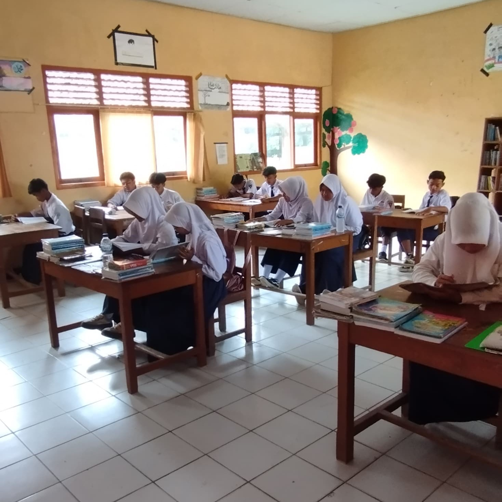
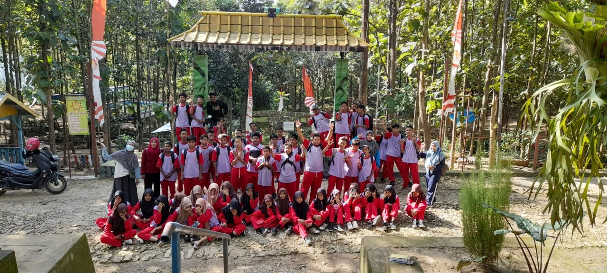
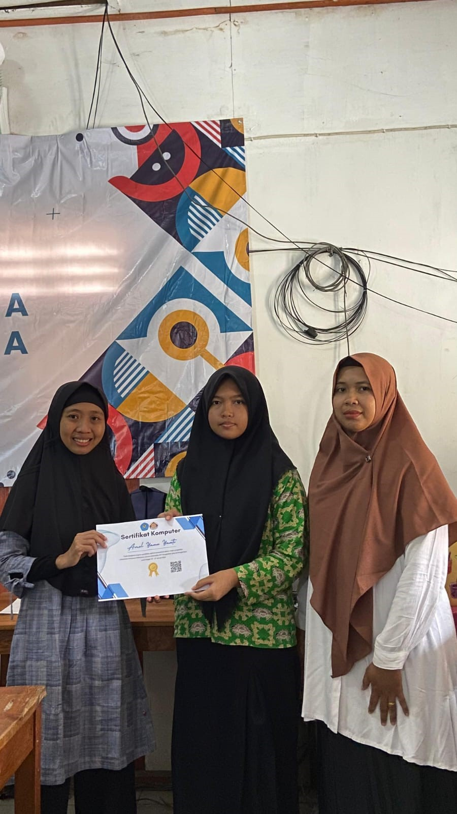

Mewujudkan generasi cerdas, berkarakter, dan berdaya saing.
Selamat datang di website resmi SMP PGRI BLUNGUN. Kami berkomitmen memberikan pendidikan terbaik bagi siswa.
Program penguatan karakter, dan kegiatan ekstrakurikuler yang mendukung perkembangan siswa.
Ruang kelas nyaman, laboratorium sederhana, perpustakaan, dan lapangan olahraga.
Data jumlah siswa 5 tahun terakhir.
| No | Nama Kegiatan | Juara | Tingkat | Tahun |
|---|---|---|---|---|
| 1 | Lomba Cerdas Cermat | 1 | Kecamatan | 2024 |
| 2 | Porseni Bulutangkis | 2 | Kabupaten | 2024 |
| 3 | Lomba Pidato Bahasa Jawa | 1 | Kecamatan | 2023 |
| 4 | Olimpiade Sains (IPA) | 3 | Kabupaten | 2023 |
| 5 | Lomba Kebersihan Kelas | 1 | Sekolah | 2024 |
Acara pembukaan tahun ajaran baru berhasil dilaksanakan...

Kegiatan belajar

Ekskul

Kunjungan
Dk. Blungun, Ds. Blungun, Kec. Jepon, Kab. Blora.